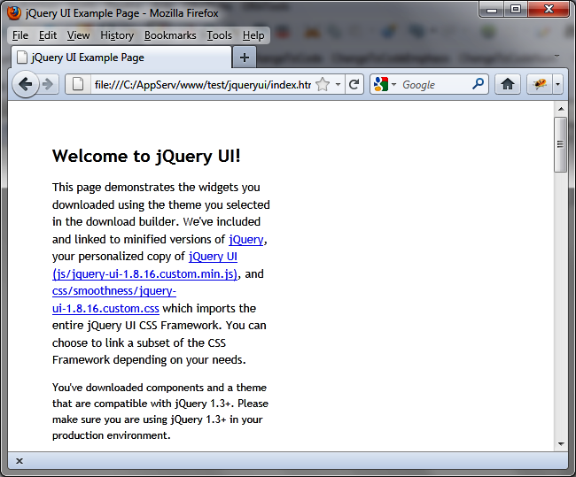
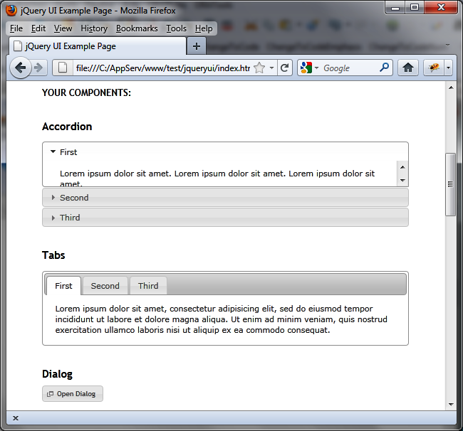

{% include JB/setup %}
{% raw %}
<div>
<div class="book" title="Overview of jQuery UI"><div class="book"><div class="book"><div class="book"><h1 class="title2"><a id="overview_of_jquery_ui" class="calibre1"></a>Overview of jQuery UI</h1></div></div></div><p class="calibre7">For an overview of jQuery UI, open the <em class="calibre4">index.html</em> file in a browser (<a class="ulink" href="ch01s02.html#jquery_ui_home_page" title="Figure 1-1. jQuery UI home page">Figure 1-1</a>).</p><div class="book"><div class="figure"><a id="jquery_ui_home_page" class="firstname"></a><div class="book"><div class="book"><a id="I_mediaobject1_d1e390" class="firstname"></a></div></div><p class="title4">Figure 1-1. jQuery UI home page</p></div></div><p class="calibre7">In this file, you can see the different features that jQuery UI adds
    (<a class="ulink" href="ch01s02.html#jquery_ui_home_page_colon_list_of_compon" title="Figure 1-2. jQuery UI home page: list of components">Figure 1-2</a>), including
    the following:</p><div class="book"><ul class="itemizedlist"><li class="listitem"><p class="calibre7">Accordion menus</p></li><li class="listitem"><p class="calibre7">Autocompletion mechanism for input fields</p></li><li class="listitem"><p class="calibre7">Buttons and checkboxes of the nicest aspects</p></li><li class="listitem"><p class="calibre7">A tabs mechanism to facilitate the display in the page</p></li><li class="listitem"><p class="calibre7">Dialog boxes that are superimposed on top of the page</p></li><li class="listitem"><p class="calibre7">Custom icons</p></li><li class="listitem"><p class="calibre7">Sliders</p></li><li class="listitem"><p class="calibre7">Calendars</p></li><li class="listitem"><p class="calibre7">Progress bars</p></li></ul></div><div class="book"><div class="figure"><a id="jquery_ui_home_page_colon_list_of_compon" class="firstname"></a><div class="book"><div class="book"><a id="I_mediaobject1_d1e430" class="firstname"></a></div></div><p class="title4">Figure 1-2. jQuery UI home page: list of components</p></div></div><p class="calibre7">These are all possibilities that we will discuss later in the book.
    We will also consider other mechanisms such as drag-and-drop, new visual
    effects, CSS theme files, and more.</p></div></div>

{% endraw %}

